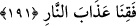

yaptığını boşa çıkarmayacağım. Onlar ki, hicret ettiler, yurtlarından çıkarıldılar,
benim yolumda eziyete uğradılar, çarpıştılar ve öldürüldüler; andolsun, ben de
onların kötülüklerini örteceğim ve onları altlarından ırmaklar akan cennetlere
koyacağım. Bu mükâfat, Allah tarafındandır. Sevabın en güzeli Allah’ın katındadır.
“Göklerin ve yerin” bu iki büyük varlığın, “yaratılışında” Allah’ın göklerdeki
yaratıklarına güneş, ay ve yıldız adı verilirken, yerdeki yaratıklarına deniz, ağaç, vahşî
hayvan ve kuş denir. “Gecenin ve gündüzün birbirinin peşinden gelişinde” yani
gecenin gidip gündüzün gelişinde, “akıl sahipleri için;” evham ve hayal şâibelerinden
uzak bir akla sahip bulunan kişiler için birçok “âyetler,” ibretler “vardır.” Gece ve
gündüzün renklerinin değişmesine ya da birinin artıp diğerinin azalması; birinin azalıp
diğerinin artması sûretiyle gece ve gündüzün farklı oluşuna güneşin durumunun, zaman-
mevsimler hasebiyle uzaklık ve yakınlık açısından, bize göre bir farklılık arzetmesi ile
hükmedilir.
“Lübb”: Aklın özüdür. Zira aklın bir zâhiri, bir de özü vardır. Akıl, ilk mertebesi
itibarı ile akıldır. Olgunluk hâlinde ve son mertebesinde ise o artık “lübb”dür.
191. Onlar, ayakta dururken, otururken, yanları üzerine yatarken (her vakit)
Allah’ı anarlar, göklerin ve yerin yaratılışı hakkında derin derin düşünürler (ve
şöyle derler:) Rabbimiz! Sen bunu boşuna yaratmadın. Seni tesbih ederiz. Bizi
cehennem azabından koru!
“Onlar ayakta, otururken ve yanları üzerinde yatarken Allah’ı anarlar” ifadesi akıl
sahiplerinin sıfatlarını göstermekte olup “her hâlu kârda daima O’nu zikrederler.”
demektir. Her hâlu kârda diyoruz, çünkü insan genellikle bu durumlardan birinde
bulunur.
“Göklerin ve yerin yaratılışı üzerinde düşünürler.” Bunların yaratılışından ibret
alırlar. Burada “düşünme” Hz. Peygamber (s.a.)’in “mahlûkatı düşünün, onları
yaratanı değil!” buyruğundan dolayı sadece yaratılışa has kılınmıştır. Yaratanı
düşünmek ise, Onun hakikat-i mahsûsasını bilmek, insanlar açısından mümkün olmadığı
için yasaklanmıştır. Dolayısıyla yaratanın zâtını düşünmenin insanlara hiçbir faydası
yoktur.
İnsanoğlu, hem nefis, hem de bedenden mürekkep bir varlık olduğu için, Allah’a
kulluğu da hem nefis, hem de bedenle olmuştur. İşte “Allah’ı anarlar” kavl-i şerîfi ile